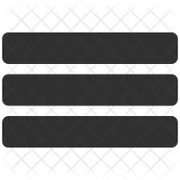

About Me
Hello everyone I'm Nishant Chauhan from Jaspur,Uttrakhand. I'm currently studying at GLA University, pursuing a Bachelor of Technology degree in Computer Science with a specialization in Cloud Computing. I'm really passionate about the field of technology and Cloud Computing, and I love exploring the endless possibilities of the digital world. I've been working hard to gain knowledge and skills in this field, and I'm confident that my dedication will lead to a successful career in the tech industry.
My skills
Java:
Mysql:
Cloud Computing:
Communication skills:
Illustration:
Canva and Figma:
Front End:
My Projects
In first year i have made a PORTABLE HEIGHT MEASURING DEVICE USING ARDUINO has as a field project
In second year i have made a CLOUD BASED ONLINE BLOOD BANK MANAGEMENT SYSTEM as a minor project